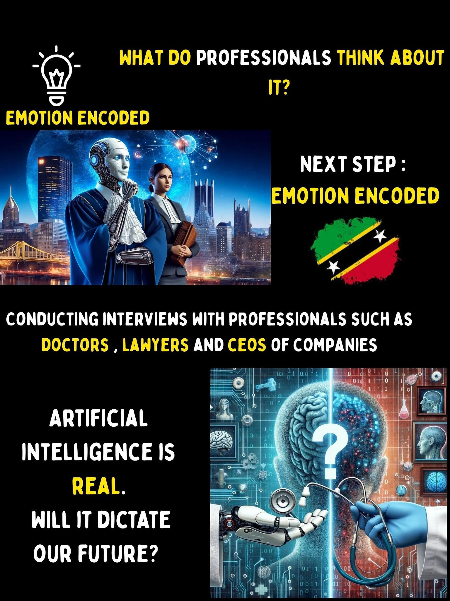
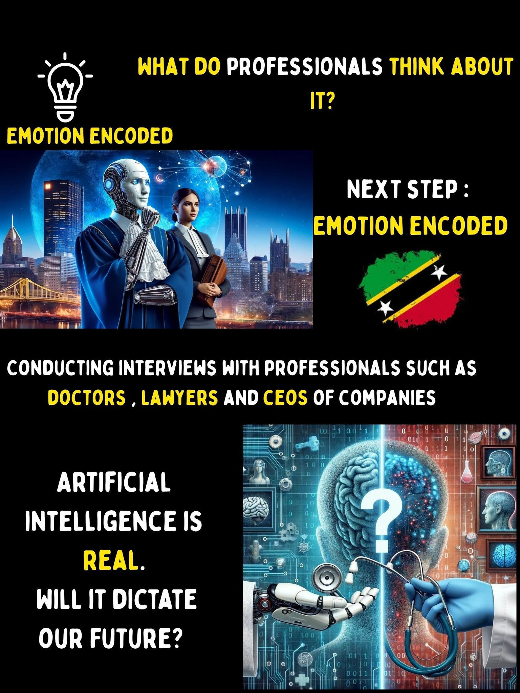

I conducted research in the Caribbean Region and I got some interesting answers. Most responses are from my hometown St. Kitts & Nevis.
I asked "Who would you trust more? An AI advisor or an AI Therapist?"
Here are some results. I'll publish the others next week. What do you think?
- 1. Financial advisor is a little too private for me
- 2. I prefer a human to deal with my money
- 3. Therapist errors are less likely to be lethal
- 4. Although both should be private and confidential, an AI therapist can draw on a large resource and apply it to challenges I may be experiencing whereas Finances are more personal.
- 5. Therapist work may involve actual human feelings and rational thinking, while financial advice is based on the numbers and their interpretation, the numbers speak for themselves.
- 6. A therapist needs a certain level of emotional intelligence that I don't think AI has developed.
- 9. Finance is numbers. I can sort out my own feelings.
- 10. Therapist has a lot more nuances and human components that robots can’t completely understand. Financial is about understanding markets, money movement, world economy..more facts, more objectives. Robot advice will be more adequate.
- 11. There are layers to communication which AI may not tap into within the process of therapy.
- 12. Might be easier to see if it is working for me or not.
- 13. It's research and figures, no understanding of emotions involved.
- 14. Health over Wealth.
- 15. The therapist errors are more easily corrected.
What does this mean?
Trust isn't automatic.
Have we considered all the risks involved with trusting an AI tool with our finances or our personal feelings?
Is it mainly about communicating ethically?
What does this mean for people who's in the career of financial advising?
What does this mean for psychologists?
Join in on the discussion.